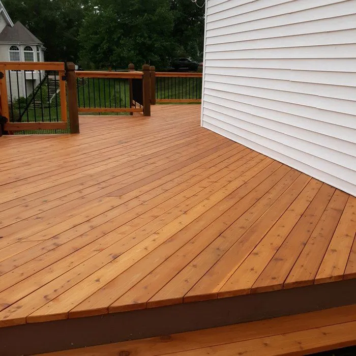
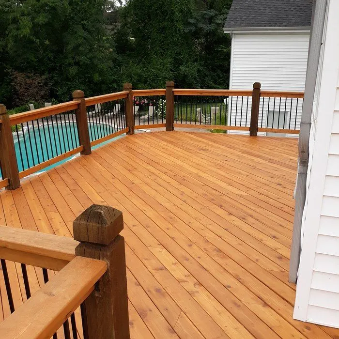
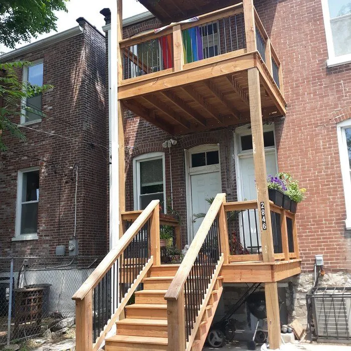

Our work · Ten years
St. Louis deck and porch repair photos
Deck rehabs, structural repairs, custom builds, and historic porch restorations from across the Greater St. Louis metro area. Nearly all of it started as a deck someone had been told to tear out.
Deck rehabs & rebuilds
Deck rehabs and rebuilds in St. Louis




Custom builds
Custom deck builds across the St. Louis metro




Porches & historic work
Porch repair and historic porch restoration


Patios, pergolas & lighting
Covered patios, pergolas, and deck lighting


Free estimate
See something like your project?
Tell us what your deck or porch needs and we’ll get you a free, honest estimate, an accurate look at what it actually takes.
tel(314) 202-4037
hrsMonday to Friday, 8am to 5pm
locGreater St. Louis metro area